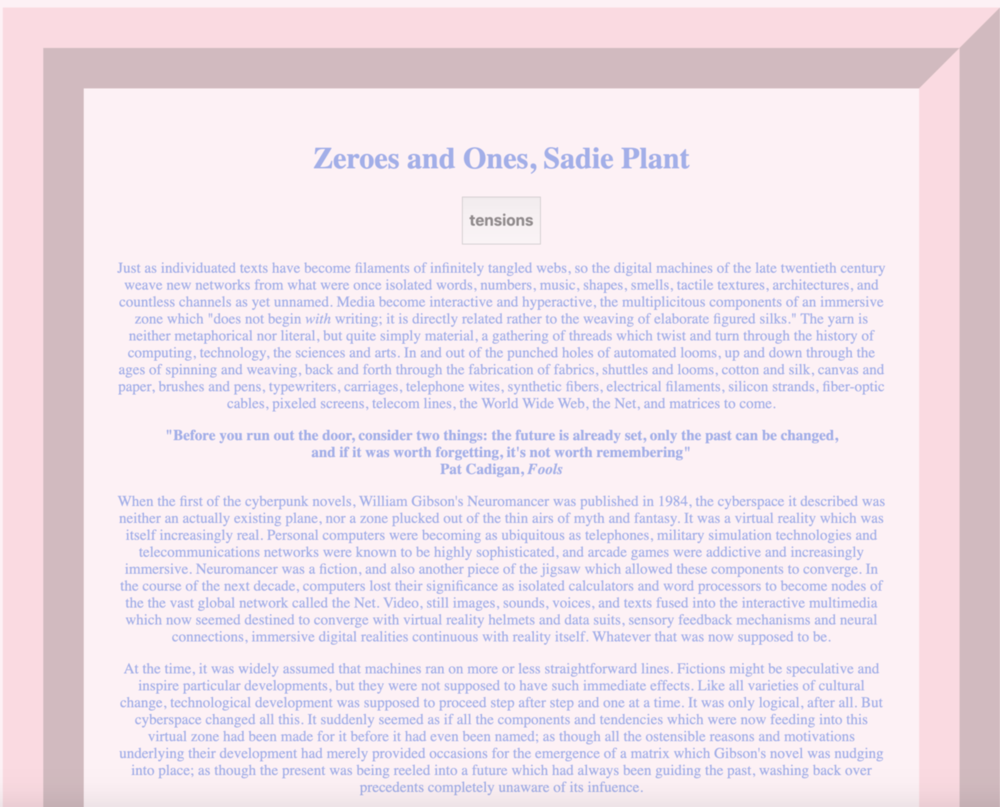
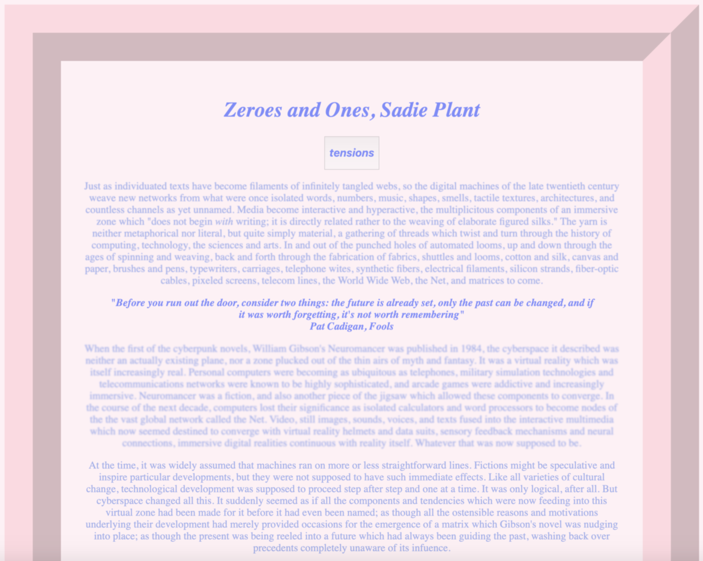
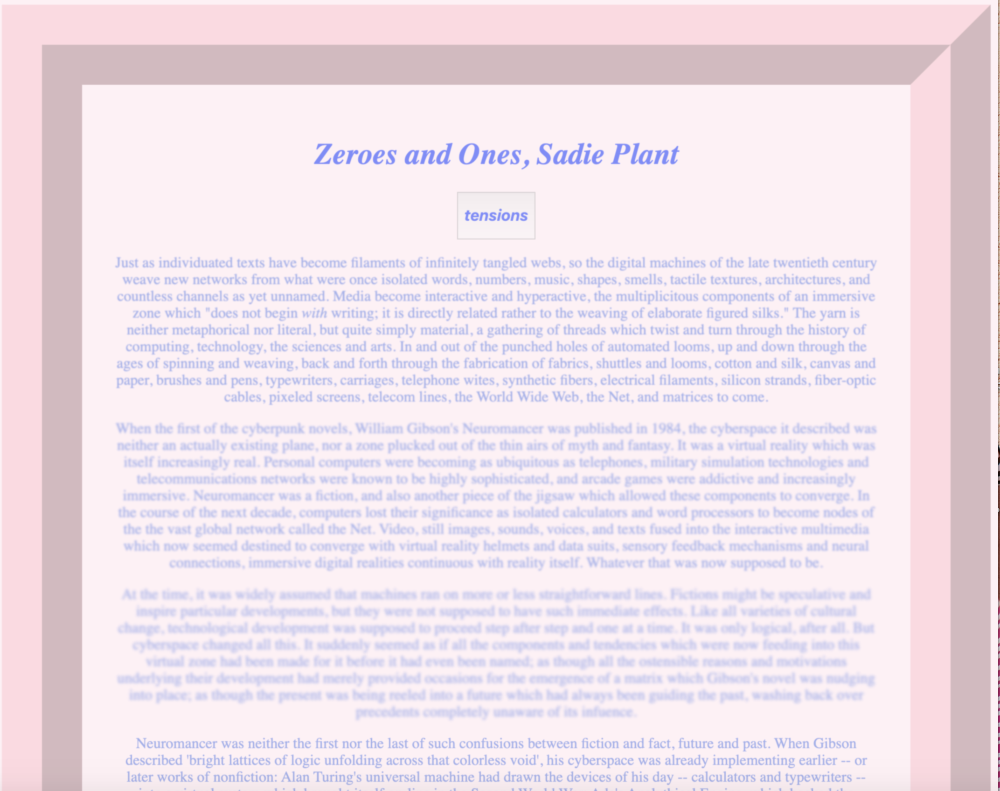
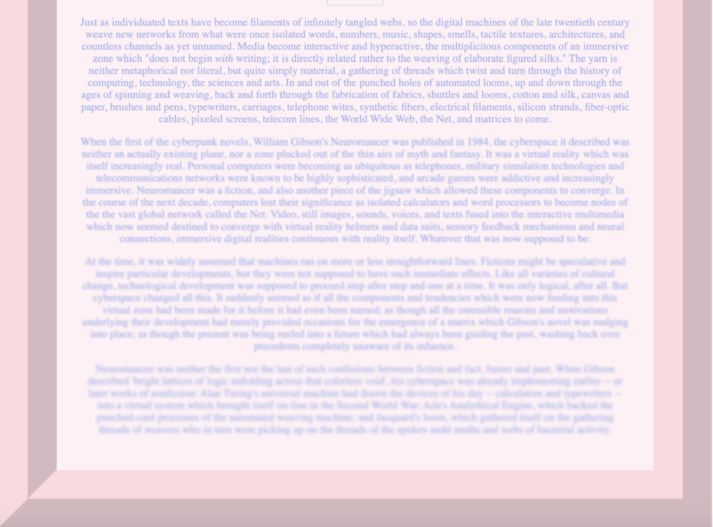

Link to Assignment
Hi!
I first changed the background color of the body element by using selecting the body
element and using JQuery to change the background color and text alignment to center
because I’m a love center aligned text. I changed the font family to Garamond.
I like using onmouseover and wanted to change the font color so I created a class “blue”
and applied it to the “H1” “H2” and “block quote” elements. I made the function change-
Background and applied it to all elements with the class “.blue” and used JQuery $ to
change the css properties of all the elements with class “.blue” by writing .css({“color”:
“blue”}) so that the font color of all things under the class “.blue” become blue.
I added a toggle function onmouseleave to the block quote but instead of toggling it just
disappears for some reason…
I then added a blur filter to the body to give it a muted dreamy feeling because the text
speaks about virtual realities, and the confusion between fact and fiction, future and past.
I created some functions “onIt 1-4” so that the different paragraphs blur out a little more
as you scroll down the page. But I couldn’t figure out how to invert what I did and unblur
them. I struggled with that for a while. But the increasing blur adds to the confusion
that immersive digital realities can bring.
I created a button that would cause the block quote to toggle and I used the H2 element as
the text for the button.I added a border to the body element so it frames the text.
I want to later experiment with variables later so I am not confined to one color “blue” but
I can use a wider variety of general colors. But we shall see if I get to that. Next steps!

Without touching the page

When you put your mouse over the headings

When you click the button

Everything becomes more blurry
When I was in highschool, we had to take this class called intro to computer science and
I absolutely hated it because it was so so SO very mathy... Then, my teacher suddenly quit
to join the circus because she was sick of the burocracy (I can't spell, sorry!) She made
us bring a stuffed animal or rubber ducky to class everyday and if we didn't have it we
would get point deductions. We were to talk to our duckies whenever we weren't sure what
was wrong with our code so we could be less stressed and figure it out lol. I like the part
where Lippert suggests to write it down on paper because looking at every line and
analyzing its use may help you feel less anxious about the situation at hand and can make
the longer code look a lot less intimidating. Establishing a decoding methodthat works for
you can also help you become more systematic when debugging future things.